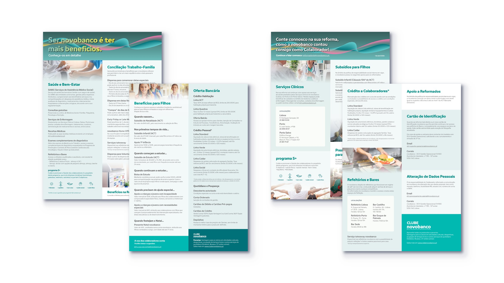

← All work
leaflets and newsletters
- Context
- In-house · Novobanco
- Scope
- Leaflets, newsletter articles
- Year
- 2023–now
- Role
- Writing and design
The brief
Without an internal graphic design team, pieces such as newsletters and leaflets are often assigned to me.
What I did
Redesigned previous internal publications, and wrote and designed newsletter articles.

Employee-benefits leaflets for Novobanco: one for staff, one for retirees.
Scroll to read ↓Newsletter article, written and designed by me. Stock illustrations.
Scroll to read ↓Newsletter article, written and designed by me. Stock illustrations.
Next project
Infographic posters →